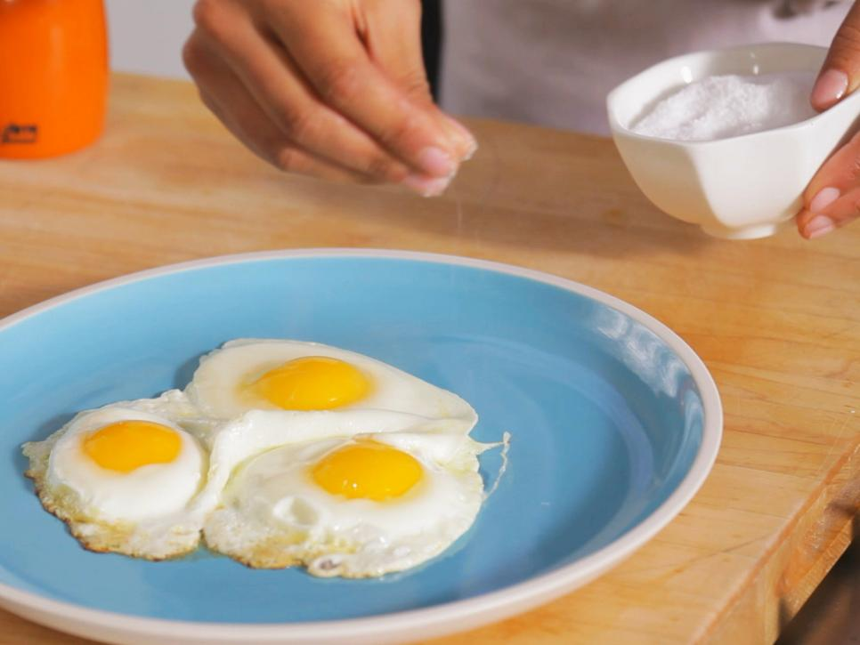

Step 1
For sunny-side-up eggs, start with a hot nonstick skillet on medium heat. Swirl in a little butter. Tip: Olive oil or bacon drippings will work great, too.
Step 2
Crack the eggs into individual bowls. This way you can inspect for broken shells and yolks.
Step 3
Add the eggs side by side in the pan.
Step 4

In about a minute, the outer edges will turn opaque. This is your cue to cover the pan and lower the heat. Tip: A lid traps the steam and gently cooks the top.
Step 5
Wait 4 minutes and you'll have perfect eggs — no sticking or breaking. The longer you cook the eggs, the harder the yolk will be. If you want a medium yolk, cook for 5 minutes. A hard yolk will set in 6. Tip: Fresher eggs are best since the whites are firm and hold their shape better. Hit them with salt and pepper to taste and that's it!
Option for Easy Over
If you like your eggs over easy, start as with sunny-side-up eggs, then flip the eggs when the outside whites set. Cook for about a minute on this side. Tip: Use a confident, gentle motion when flipping. Get under the edge with the spatula, then flip it.
Step 7
Serve.
Add additonal toppings if desired.